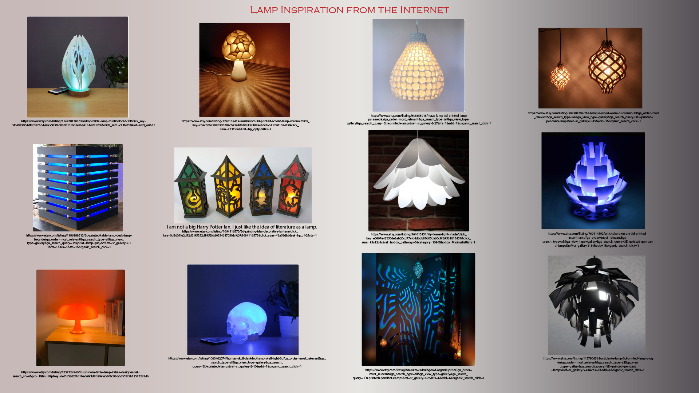

Illuminating the World Around Me (Making a Lamp)
This will contain all of my documentation for the Lamp Assignment. As of November 8th, however, the page shows my inspiration, planning, and experimentation process with patterns and other elements.
My first step was to order a table lamp base so that I could have options, as I experimented, to make either a hanging lamp or a table lamp (see photo above). Happily, the measurements for the lamps are similar.
No matter what design I go with, it will need to fit neatly and tightly around these measurements.
Then I went online for some inspiration:

I know most of these are beyond my skill level, but they gave me a place to start with experimentation in Rhino and Grasshopper.
In my early Rhino experiments, I played with polysurfaces, planes, and meshes to try to design things I had seen online, like mushroom tops, twisted abstracts, warped "tulip petals," and more:


I stumbled on a design on which I am now working. The concept is a hanging moon-and-stars, in which the spherical 'moon' has a hole in the top which attaches to a ring support which fits around the 4cm circumference hanging cone, using hooks or tabs.
The bottom of the 'moon' will have either hook openings for the stars to attach (several attachment points per star), or, if there is a way, attachment points for filaments from which the stars can suspend (though I do not know how to do that, or if it can be done).
The PLA filament for the hollow moon will be a translucent one, as I plan a blue bulb inside. I hope to master silk or HTPLA filament for the stars so they can be in shiny, rainbow colors. I know the stars would have to have high rafts or brims for printing.
I am not 100% decided on this concept.

The sphere for the moon will be around 8-10cm diameter (hollow but thicker for tolerance and stable attachment points). The stars will vary in size from 8cm in height to 4cm in height, depending on the best way to attach them.
While playing with spheres, I mushed one into a blobby half-sphere which might be easier for the moon (for hanging stars), but also reminded me of a jelly:
I like this idea, the jelly tentacles seem easier to attach and print than the stars, and would be less time-consuming, but with the shiny HTPLA or silk would be just as effective.
My last experiment at this time is a meshy base lamp in a bulbuous shape that I made using LunchBox, where I experimented with some online instructions from Cults on how to make a cover and attachment for the lamp base to go with it. I would still need to shrink the lower part of the bulb even more, I am working in that.

Source files can be found here:
MoonAndStarsLampDesign.3dm
ExperimentTulipSides.3dmbak
GeometricsWarped.3dm
MushroomTops.3dm
SpheresforCuttingTopnBottom.3dm
HalfDomeMesh.3dm
Jelly1.3dm
MeshBulbBaseLamp.3dm